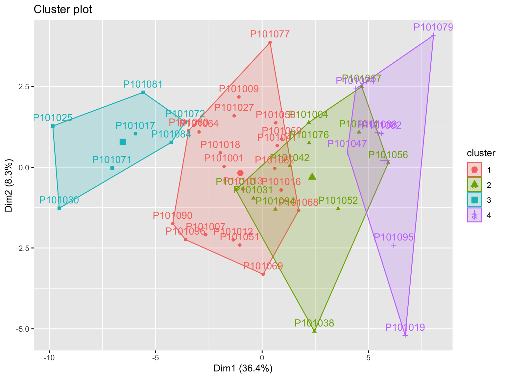
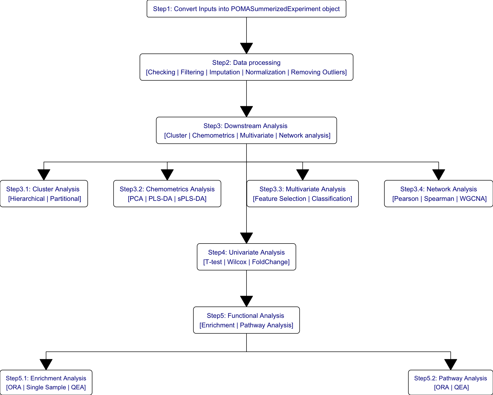
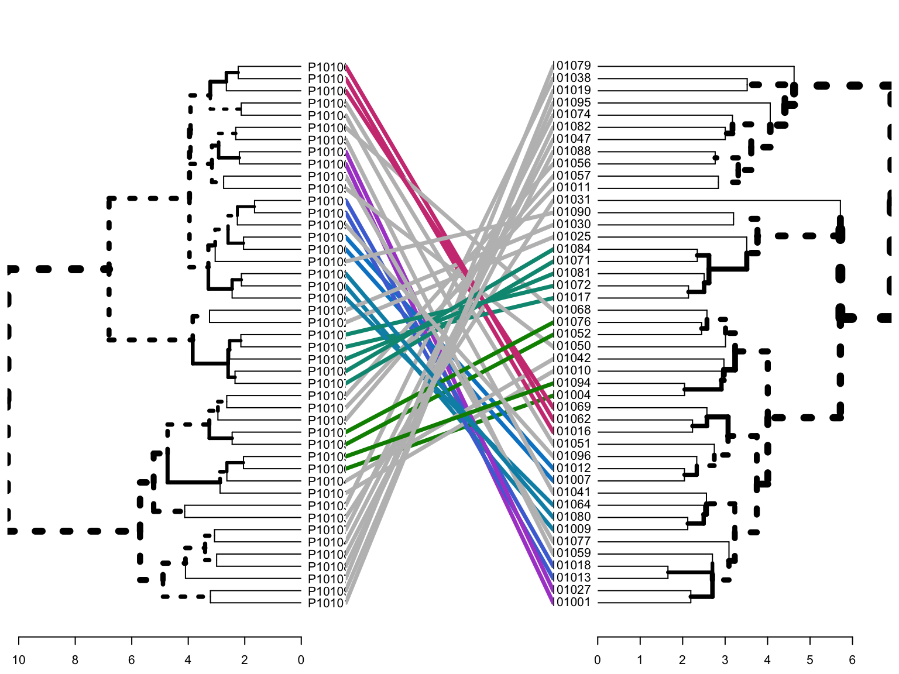
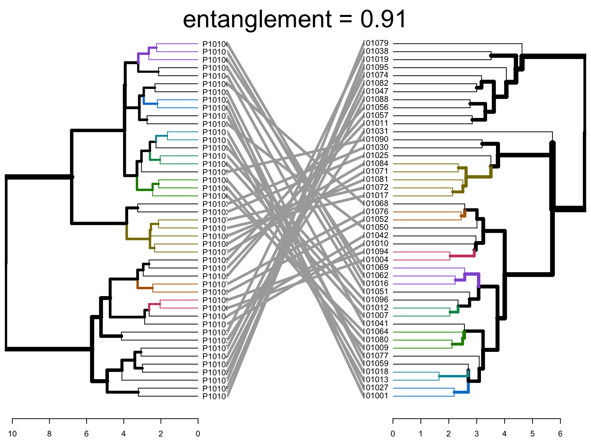
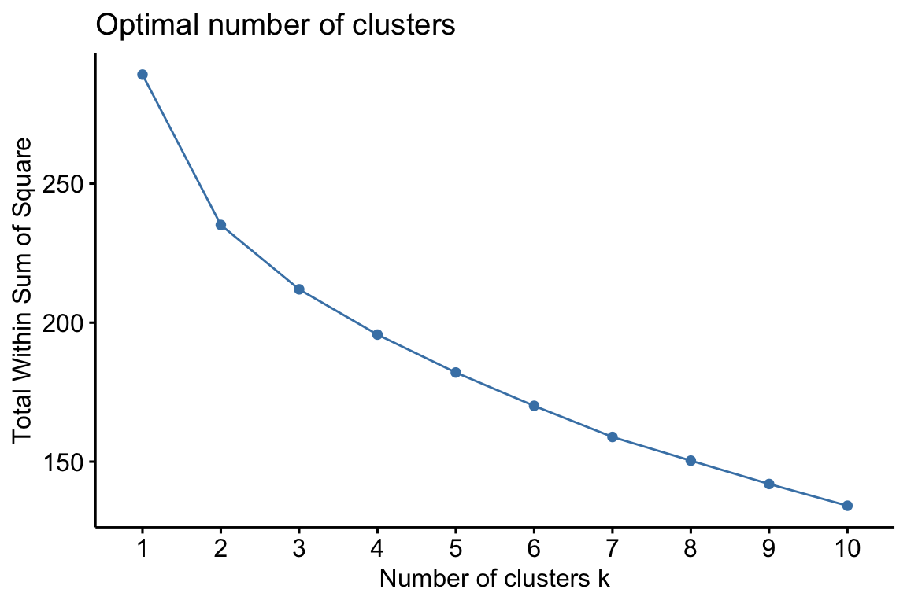
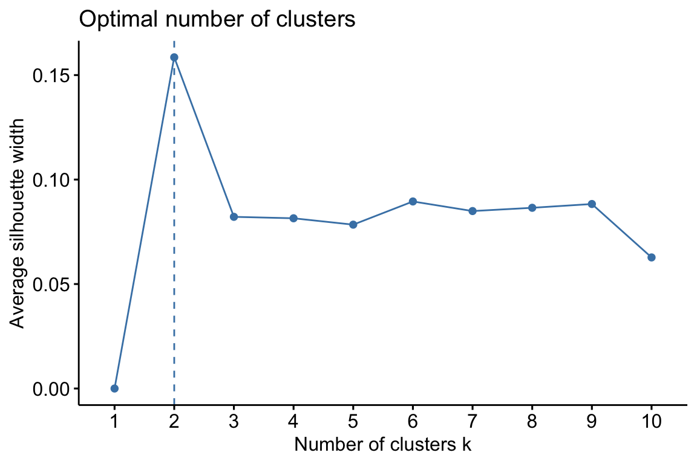
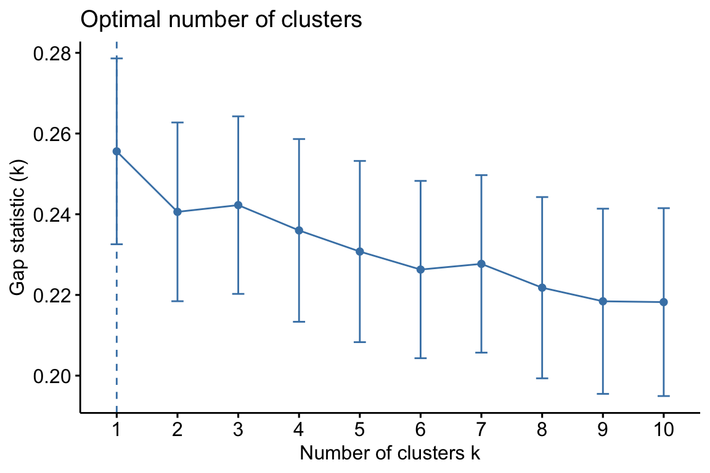
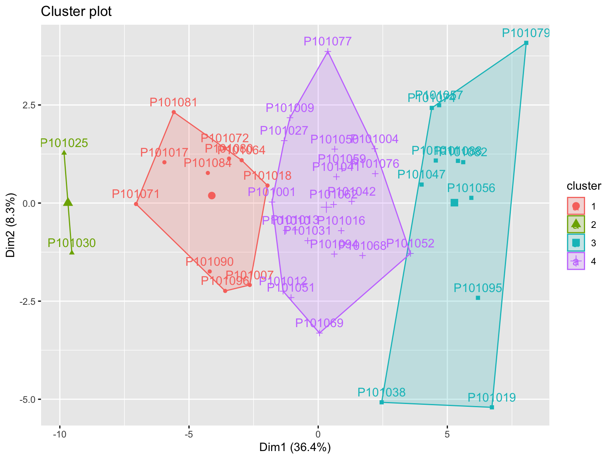

Chapter 3 Cluster Analysis
Hierarchical clustering is an alternative approach to k-means clustering for identifying groups in the dataset. It does not require us to pre-specify the number of clusters to be generated as is required by the k-means approach. Furthermore, hierarchical clustering has an added advantage over K-means clustering in that it results in an attractive tree-based representation of the observations, called a dendrogram.
3.1 Loading packages
knitr::opts_chunk$set(warning = F)
library(dplyr)
library(tibble)
library(POMA)
library(ggplot2)
library(SummarizedExperiment)
library(cluster) # clustering algorithms
library(factoextra) # clustering visualization
library(dendextend) # for comparing two dendrograms
# rm(list = ls())
options(stringsAsFactors = F)
options(future.globals.maxSize = 1000 * 1024^2)3.2 Importing data
The input data sets are from the previous chapter.
se_normalize <- readRDS("./dataset/POMA/se_normalize.RDS")3.3 Hierarchical Clustering
Hierarchical clustering can be divided into two main types: agglomerative and divisive.
Calculate dissimilarity
However, a bigger question is: How do we measure the dissimilarity between two clusters of observations? A number of different cluster agglomeration methods (i.e, linkage methods) have been developed to answer to this question. The most common types methods are:
- Maximum or complete linkage clustering: It computes all pairwise dissimilarities between the elements in cluster 1 and the elements in cluster 2, and considers the largest value (i.e., maximum value) of these dissimilarities as the distance between the two clusters. It tends to produce more compact clusters.
- Minimum or single linkage clustering: It computes all pairwise dissimilarities between the elements in cluster 1 and the elements in cluster 2, and considers the smallest of these dissimilarities as a linkage criterion. It tends to produce long, “loose” clusters.
- Mean or average linkage clustering: It computes all pairwise dissimilarities between the elements in cluster 1 and the elements in cluster 2, and considers the average of these dissimilarities as the distance between the two clusters.
- Centroid linkage clustering: It computes the dissimilarity between the centroid for cluster 1 (a mean vector of length p variables) and the centroid for cluster 2.
- Ward’s minimum variance method: It minimizes the total within-cluster variance. At each step the pair of clusters with minimum between-cluster distance are merged.
Data Processing:
Rows are observations (individuals) and columns are variables.
Any missing value in the data must be removed or estimated.
The data must be standardized (i.e., scaled) to make variables comparable. Recall that, standardization consists of transforming the variables such that they have mean zero and standard deviation one.
Functions to computing hierarchical clustering:
hclust [in stats package] and agnes [in cluster package] for agglomerative hierarchical clustering.
diana [in cluster package] for divisive hierarchical clustering.
HieraCluster <- function(object,
method_dis = c("euclidean", "bray"),
method_cluster = c("average", "single", "complete", "ward", "ward.D2"),
cluster_type = c("Agglomerative", "Divisive"),
tree_num = 4) {
features_tab <- SummarizedExperiment::assay(object)
metadata_tab <- SummarizedExperiment::colData(object)
df <- t(features_tab)
if (cluster_type == "Agglomerative") {
# Agglomerative Hierarchical Clustering
# Dissimilarity matrix
d <- dist(df, method = method_dis)
# Hierarchical clustering using Linkage method
hc <- hclust(d, method = method_cluster)
# hc <- agnes(df, method = method_cluster)
####### identifying the strongest clustering structure ################
# # methods to assess
# m <- c( "average", "single", "complete", "ward")
# names(m) <- c( "average", "single", "complete", "ward")
#
# # function to compute coefficient
# ac <- function(x) {
# agnes(df, method = x)$ac
# }
#
# map_dbl(m, ac)
} else if (cluster_type == "Divisive") {
# Divisive Hierarchical Clustering
hc <- diana(df, metric = method_dis)
}
hc_res <- as.hclust(hc)
sub_grp <- cutree(hc_res, k = tree_num)
plot(hc_res, cex = 0.6)
rect.hclust(hc_res, k = tree_num, border = 2:(tree_num+1))
res <- list(data=df,
cluster=sub_grp,
hc=hc_res)
return(res)
}3.3.1 Agglomerative Hierarchical Clustering
Agglomerative clustering: It’s also known as AGNES (Agglomerative Nesting). It works in a bottom-up manner. That is, each object is initially considered as a single-element cluster (leaf). At each step of the algorithm, the two clusters that are the most similar are combined into a new bigger cluster (nodes). This procedure is iterated until all points are member of just one single big cluster (root). The result is a tree which can be plotted as a dendrogram.
- Calculation
Agg_hc_res <- HieraCluster(
object = se_normalize,
method_dis = "euclidean",
method_cluster = "ward.D2",
cluster_type = "Agglomerative")
- Visualization: visualize the result in a scatter plot
fviz_cluster(list(data = Agg_hc_res$data,
cluster = Agg_hc_res$cluster))
3.3.2 Divisive Hierarchical Clustering
Divisive hierarchical clustering: It’s also known as DIANA (Divise Analysis) and it works in a top-down manner. The algorithm is an inverse order of AGNES. It begins with the root, in which all objects are included in a single cluster. At each step of iteration, the most heterogeneous cluster is divided into two. The process is iterated until all objects are in their own cluster.
- Calculation
Div_hc_res <- HieraCluster(
object = se_normalize,
method_dis = "euclidean",
method_cluster = "ward",
cluster_type = "Divisive")
- Visualization: visualize the result in a scatter plot
fviz_cluster(list(data = Div_hc_res$data,
cluster = Div_hc_res$cluster))
3.3.3 Comparison
- dendrograms: In the dendrogram displayed above, each leaf corresponds to one observation.
Agg_hc_dend <- as.dendrogram(Agg_hc_res$hc)
Div_hc_dend <- as.dendrogram(Div_hc_res$hc)
tanglegram(Agg_hc_dend, Div_hc_dend)
- tanglegrams
dend_list <- dendlist(Agg_hc_dend, Div_hc_dend)
tanglegram(Agg_hc_dend, Div_hc_dend,
highlight_distinct_edges = FALSE, # Turn-off dashed lines
common_subtrees_color_lines = FALSE, # Turn-off line colors
common_subtrees_color_branches = TRUE, # Color common branches
main = paste("entanglement =", round(entanglement(dend_list), 2)))
3.3.4 Determining Optimal Clusters
- Elbow plot
fviz_nbclust(Agg_hc_res$data, FUN = hcut, method = "wss")
- Average Silhouette Method
fviz_nbclust(Agg_hc_res$data, FUN = hcut, method = "silhouette")
- Gap Statistic Method
gap_stat <- clusGap(Agg_hc_res$data, FUN = hcut, nstart = 25, K.max = 10, B = 50)## Clustering k = 1,2,..., K.max (= 10): .. done
## Bootstrapping, b = 1,2,..., B (= 50) [one "." per sample]:
## .................................................. 50fviz_gap_stat(gap_stat)
3.4 Partitional Clustering
K-means clustering is the most commonly used unsupervised machine learning algorithm for partitioning a given data set into a set of k groups (i.e. k clusters), where k represents the number of groups pre-specified by the analyst.
PartCluster <- function(object,
cluster_num = 4) {
features_tab <- SummarizedExperiment::assay(object)
metadata_tab <- SummarizedExperiment::colData(object)
df <- t(features_tab)
res <- kmeans(df, centers = cluster_num)
# show clusters
print(fviz_cluster(list(data = df,
cluster = res$cluster)))
return(res)
}
Kcluster_res <- PartCluster(
object = se_normalize,
cluster_num = 4)3.5 Systematic Information
devtools::session_info()## ─ Session info ─────────────────────────────────────────────────────────────────────────────────
## setting value
## version R version 4.1.2 (2021-11-01)
## os macOS Monterey 12.2.1
## system x86_64, darwin17.0
## ui RStudio
## language (EN)
## collate en_US.UTF-8
## ctype en_US.UTF-8
## tz Asia/Shanghai
## date 2022-08-11
## rstudio 2022.07.1+554 Spotted Wakerobin (desktop)
## pandoc 2.18 @ /Applications/RStudio.app/Contents/MacOS/quarto/bin/tools/ (via rmarkdown)
##
## ─ Packages ─────────────────────────────────────────────────────────────────────────────────────
## package * version date (UTC) lib source
## abind 1.4-5 2016-07-21 [1] CRAN (R 4.1.0)
## ade4 1.7-18 2021-09-16 [1] CRAN (R 4.1.0)
## annotate 1.72.0 2021-10-26 [1] Bioconductor
## AnnotationDbi 1.56.2 2021-11-09 [1] Bioconductor
## ape 5.6-2 2022-03-02 [1] CRAN (R 4.1.2)
## assertthat 0.2.1 2019-03-21 [1] CRAN (R 4.1.0)
## backports 1.4.1 2021-12-13 [1] CRAN (R 4.1.0)
## base64enc 0.1-3 2015-07-28 [1] CRAN (R 4.1.0)
## Biobase * 2.54.0 2021-10-26 [1] Bioconductor
## BiocGenerics * 0.40.0 2021-10-26 [1] Bioconductor
## BiocParallel 1.28.3 2021-12-09 [1] Bioconductor
## biomformat 1.22.0 2021-10-26 [1] Bioconductor
## Biostrings 2.62.0 2021-10-26 [1] Bioconductor
## bit 4.0.4 2020-08-04 [1] CRAN (R 4.1.0)
## bit64 4.0.5 2020-08-30 [1] CRAN (R 4.1.0)
## bitops 1.0-7 2021-04-24 [1] CRAN (R 4.1.0)
## blob 1.2.2 2021-07-23 [1] CRAN (R 4.1.0)
## bookdown 0.27 2022-06-14 [1] CRAN (R 4.1.2)
## brio 1.1.3 2021-11-30 [1] CRAN (R 4.1.0)
## broom 0.7.12 2022-01-28 [1] CRAN (R 4.1.2)
## bslib 0.3.1 2021-10-06 [1] CRAN (R 4.1.0)
## cachem 1.0.6 2021-08-19 [1] CRAN (R 4.1.0)
## Cairo 1.5-14 2021-12-21 [1] CRAN (R 4.1.2)
## callr 3.7.0 2021-04-20 [1] CRAN (R 4.1.0)
## car 3.0-12 2021-11-06 [1] CRAN (R 4.1.0)
## carData 3.0-5 2022-01-06 [1] CRAN (R 4.1.2)
## caret 6.0-92 2022-04-19 [1] CRAN (R 4.1.2)
## caTools 1.18.2 2021-03-28 [1] CRAN (R 4.1.0)
## cellranger 1.1.0 2016-07-27 [1] CRAN (R 4.1.0)
## checkmate 2.0.0 2020-02-06 [1] CRAN (R 4.1.0)
## circlize 0.4.14 2022-02-11 [1] CRAN (R 4.1.2)
## class 7.3-20 2022-01-13 [1] CRAN (R 4.1.2)
## cli 3.3.0 2022-04-25 [1] CRAN (R 4.1.2)
## clue 0.3-60 2021-10-11 [1] CRAN (R 4.1.0)
## cluster * 2.1.2 2021-04-17 [1] CRAN (R 4.1.2)
## codetools 0.2-18 2020-11-04 [1] CRAN (R 4.1.2)
## coin 1.4-2 2021-10-08 [1] CRAN (R 4.1.0)
## colorspace 2.0-3 2022-02-21 [1] CRAN (R 4.1.2)
## ComplexHeatmap 2.10.0 2021-10-26 [1] Bioconductor
## corpcor 1.6.10 2021-09-16 [1] CRAN (R 4.1.0)
## cowplot 1.1.1 2020-12-30 [1] CRAN (R 4.1.0)
## crayon 1.5.0 2022-02-14 [1] CRAN (R 4.1.2)
## crmn 0.0.21 2020-02-10 [1] CRAN (R 4.1.0)
## curl 4.3.2 2021-06-23 [1] CRAN (R 4.1.0)
## data.table 1.14.2 2021-09-27 [1] CRAN (R 4.1.0)
## DBI 1.1.2 2021-12-20 [1] CRAN (R 4.1.0)
## DelayedArray 0.20.0 2021-10-26 [1] Bioconductor
## dendextend * 1.15.2 2021-10-28 [1] CRAN (R 4.1.0)
## desc 1.4.1 2022-03-06 [1] CRAN (R 4.1.2)
## DESeq2 1.34.0 2021-10-26 [1] Bioconductor
## devtools 2.4.3 2021-11-30 [1] CRAN (R 4.1.0)
## digest 0.6.29 2021-12-01 [1] CRAN (R 4.1.0)
## doParallel 1.0.17 2022-02-07 [1] CRAN (R 4.1.2)
## doSNOW 1.0.20 2022-02-04 [1] CRAN (R 4.1.2)
## dplyr * 1.0.8 2022-02-08 [1] CRAN (R 4.1.2)
## dynamicTreeCut * 1.63-1 2016-03-11 [1] CRAN (R 4.1.0)
## e1071 1.7-9 2021-09-16 [1] CRAN (R 4.1.0)
## edgeR 3.36.0 2021-10-26 [1] Bioconductor
## ellipse 0.4.2 2020-05-27 [1] CRAN (R 4.1.0)
## ellipsis 0.3.2 2021-04-29 [1] CRAN (R 4.1.0)
## evaluate 0.15 2022-02-18 [1] CRAN (R 4.1.2)
## factoextra * 1.0.7 2020-04-01 [1] CRAN (R 4.1.0)
## fansi 1.0.2 2022-01-14 [1] CRAN (R 4.1.2)
## farver 2.1.0 2021-02-28 [1] CRAN (R 4.1.0)
## fastcluster * 1.2.3 2021-05-24 [1] CRAN (R 4.1.0)
## fastmap 1.1.0 2021-01-25 [1] CRAN (R 4.1.0)
## fastmatch 1.1-3 2021-07-23 [1] CRAN (R 4.1.0)
## fdrtool 1.2.17 2021-11-13 [1] CRAN (R 4.1.0)
## fgsea 1.20.0 2021-10-26 [1] Bioconductor
## filematrix 1.3 2018-02-27 [1] CRAN (R 4.1.0)
## foreach 1.5.2 2022-02-02 [1] CRAN (R 4.1.2)
## foreign 0.8-82 2022-01-13 [1] CRAN (R 4.1.2)
## forestplot 2.0.1 2021-09-03 [1] CRAN (R 4.1.0)
## Formula 1.2-4 2020-10-16 [1] CRAN (R 4.1.0)
## fs 1.5.2 2021-12-08 [1] CRAN (R 4.1.0)
## future 1.24.0 2022-02-19 [1] CRAN (R 4.1.2)
## future.apply 1.8.1 2021-08-10 [1] CRAN (R 4.1.0)
## genefilter 1.76.0 2021-10-26 [1] Bioconductor
## geneplotter 1.72.0 2021-10-26 [1] Bioconductor
## generics 0.1.2 2022-01-31 [1] CRAN (R 4.1.2)
## GenomeInfoDb * 1.30.1 2022-01-30 [1] Bioconductor
## GenomeInfoDbData 1.2.7 2022-03-09 [1] Bioconductor
## GenomicRanges * 1.46.1 2021-11-18 [1] Bioconductor
## GetoptLong 1.0.5 2020-12-15 [1] CRAN (R 4.1.0)
## ggforce 0.3.3 2021-03-05 [1] CRAN (R 4.1.0)
## ggplot2 * 3.3.5 2021-06-25 [1] CRAN (R 4.1.0)
## ggpubr 0.4.0 2020-06-27 [1] CRAN (R 4.1.0)
## ggraph * 2.0.5 2021-02-23 [1] CRAN (R 4.1.0)
## ggrepel 0.9.1 2021-01-15 [1] CRAN (R 4.1.0)
## ggsignif 0.6.3 2021-09-09 [1] CRAN (R 4.1.0)
## glasso 1.11 2019-10-01 [1] CRAN (R 4.1.0)
## glmnet * 4.1-3 2021-11-02 [1] CRAN (R 4.1.0)
## GlobalOptions 0.1.2 2020-06-10 [1] CRAN (R 4.1.0)
## globals 0.14.0 2020-11-22 [1] CRAN (R 4.1.0)
## globaltest 5.48.0 2021-10-26 [1] Bioconductor
## glue * 1.6.2 2022-02-24 [1] CRAN (R 4.1.2)
## Gmisc * 3.0.0 2022-01-03 [1] CRAN (R 4.1.2)
## gmp 0.6-5 2022-03-17 [1] CRAN (R 4.1.2)
## GO.db 3.14.0 2022-04-11 [1] Bioconductor
## gower 1.0.0 2022-02-03 [1] CRAN (R 4.1.2)
## gplots 3.1.1 2020-11-28 [1] CRAN (R 4.1.0)
## graphlayouts 0.8.0 2022-01-03 [1] CRAN (R 4.1.2)
## gridExtra 2.3 2017-09-09 [1] CRAN (R 4.1.0)
## gtable 0.3.0 2019-03-25 [1] CRAN (R 4.1.0)
## gtools 3.9.2 2021-06-06 [1] CRAN (R 4.1.0)
## hardhat 0.2.0 2022-01-24 [1] CRAN (R 4.1.2)
## highr 0.9 2021-04-16 [1] CRAN (R 4.1.0)
## Hmisc 4.6-0 2021-10-07 [1] CRAN (R 4.1.0)
## htmlTable * 2.4.0 2022-01-04 [1] CRAN (R 4.1.2)
## htmltools 0.5.2 2021-08-25 [1] CRAN (R 4.1.0)
## htmlwidgets 1.5.4 2021-09-08 [1] CRAN (R 4.1.0)
## httr * 1.4.2 2020-07-20 [1] CRAN (R 4.1.0)
## huge 1.3.5 2021-06-30 [1] CRAN (R 4.1.0)
## igraph * 1.2.11 2022-01-04 [1] CRAN (R 4.1.2)
## impute 1.68.0 2021-10-26 [1] Bioconductor
## ipred 0.9-12 2021-09-15 [1] CRAN (R 4.1.0)
## IRanges * 2.28.0 2021-10-26 [1] Bioconductor
## irlba 2.3.5 2021-12-06 [1] CRAN (R 4.1.0)
## iterators 1.0.14 2022-02-05 [1] CRAN (R 4.1.2)
## jpeg 0.1-9 2021-07-24 [1] CRAN (R 4.1.0)
## jquerylib 0.1.4 2021-04-26 [1] CRAN (R 4.1.0)
## jsonlite 1.8.0 2022-02-22 [1] CRAN (R 4.1.2)
## KEGGREST 1.34.0 2021-10-26 [1] Bioconductor
## KernSmooth 2.23-20 2021-05-03 [1] CRAN (R 4.1.2)
## knitr 1.39 2022-04-26 [1] CRAN (R 4.1.2)
## labeling 0.4.2 2020-10-20 [1] CRAN (R 4.1.0)
## lattice 0.20-45 2021-09-22 [1] CRAN (R 4.1.2)
## latticeExtra 0.6-29 2019-12-19 [1] CRAN (R 4.1.0)
## lava 1.6.10 2021-09-02 [1] CRAN (R 4.1.0)
## lavaan 0.6-11 2022-03-31 [1] CRAN (R 4.1.2)
## lazyeval 0.2.2 2019-03-15 [1] CRAN (R 4.1.0)
## libcoin 1.0-9 2021-09-27 [1] CRAN (R 4.1.0)
## lifecycle 1.0.1 2021-09-24 [1] CRAN (R 4.1.0)
## limma 3.50.1 2022-02-17 [1] Bioconductor
## listenv 0.8.0 2019-12-05 [1] CRAN (R 4.1.0)
## locfit 1.5-9.5 2022-03-03 [1] CRAN (R 4.1.2)
## lubridate 1.8.0 2021-10-07 [1] CRAN (R 4.1.0)
## magrittr * 2.0.2 2022-01-26 [1] CRAN (R 4.1.2)
## MASS 7.3-55 2022-01-13 [1] CRAN (R 4.1.2)
## Matrix * 1.4-0 2021-12-08 [1] CRAN (R 4.1.0)
## MatrixGenerics * 1.6.0 2021-10-26 [1] Bioconductor
## matrixStats * 0.61.0 2021-09-17 [1] CRAN (R 4.1.0)
## memoise 2.0.1 2021-11-26 [1] CRAN (R 4.1.0)
## MetaboAnalystR * 3.2.0 2022-06-28 [1] Github (xia-lab/MetaboAnalystR@892a31b)
## metagenomeSeq 1.36.0 2021-10-26 [1] Bioconductor
## mgcv 1.8-39 2022-02-24 [1] CRAN (R 4.1.2)
## mixedCCA 1.5.2 2022-07-14 [1] Github (irinagain/mixedCCA@c6d41a3)
## mixOmics 6.18.1 2021-11-18 [1] Bioconductor (R 4.1.2)
## mnormt 2.0.2 2020-09-01 [1] CRAN (R 4.1.0)
## ModelMetrics 1.2.2.2 2020-03-17 [1] CRAN (R 4.1.0)
## modeltools 0.2-23 2020-03-05 [1] CRAN (R 4.1.0)
## multcomp 1.4-18 2022-01-04 [1] CRAN (R 4.1.2)
## multtest 2.50.0 2021-10-26 [1] Bioconductor
## munsell 0.5.0 2018-06-12 [1] CRAN (R 4.1.0)
## mvtnorm 1.1-3 2021-10-08 [1] CRAN (R 4.1.0)
## NADA 1.6-1.1 2020-03-22 [1] CRAN (R 4.1.0)
## NetCoMi * 1.0.3 2022-07-14 [1] Github (stefpeschel/NetCoMi@d4d80d3)
## nlme 3.1-155 2022-01-13 [1] CRAN (R 4.1.2)
## nnet 7.3-17 2022-01-13 [1] CRAN (R 4.1.2)
## parallelly 1.31.0 2022-04-07 [1] CRAN (R 4.1.2)
## pbapply 1.5-0 2021-09-16 [1] CRAN (R 4.1.0)
## pbivnorm 0.6.0 2015-01-23 [1] CRAN (R 4.1.0)
## pcaMethods 1.86.0 2021-10-26 [1] Bioconductor
## pcaPP 1.9-74 2021-04-23 [1] CRAN (R 4.1.0)
## permute 0.9-7 2022-01-27 [1] CRAN (R 4.1.2)
## pheatmap 1.0.12 2019-01-04 [1] CRAN (R 4.1.0)
## phyloseq 1.38.0 2021-10-26 [1] Bioconductor
## pillar 1.7.0 2022-02-01 [1] CRAN (R 4.1.2)
## pkgbuild 1.3.1 2021-12-20 [1] CRAN (R 4.1.0)
## pkgconfig 2.0.3 2019-09-22 [1] CRAN (R 4.1.0)
## pkgload 1.2.4 2021-11-30 [1] CRAN (R 4.1.0)
## plotly * 4.10.0 2021-10-09 [1] CRAN (R 4.1.0)
## plyr 1.8.6 2020-03-03 [1] CRAN (R 4.1.0)
## png 0.1-7 2013-12-03 [1] CRAN (R 4.1.0)
## polyclip 1.10-0 2019-03-14 [1] CRAN (R 4.1.0)
## POMA * 1.7.2 2022-07-26 [1] Github (pcastellanoescuder/POMA@bc8a972)
## preprocessCore 1.56.0 2021-10-26 [1] Bioconductor
## prettyunits 1.1.1 2020-01-24 [1] CRAN (R 4.1.0)
## pROC 1.18.0 2021-09-03 [1] CRAN (R 4.1.0)
## processx 3.5.2 2021-04-30 [1] CRAN (R 4.1.0)
## prodlim 2019.11.13 2019-11-17 [1] CRAN (R 4.1.0)
## proxy 0.4-26 2021-06-07 [1] CRAN (R 4.1.0)
## ps 1.6.0 2021-02-28 [1] CRAN (R 4.1.0)
## psych 2.2.5 2022-05-10 [1] CRAN (R 4.1.2)
## pulsar 0.3.7 2020-08-07 [1] CRAN (R 4.1.0)
## purrr 0.3.4 2020-04-17 [1] CRAN (R 4.1.0)
## qgraph 1.9.2 2022-03-04 [1] CRAN (R 4.1.2)
## qs 0.25.3 2022-02-22 [1] CRAN (R 4.1.2)
## R6 2.5.1 2021-08-19 [1] CRAN (R 4.1.0)
## ragg 1.2.2 2022-02-21 [1] CRAN (R 4.1.2)
## randomForest 4.7-1 2022-02-03 [1] CRAN (R 4.1.2)
## RankProd 3.20.0 2021-10-26 [1] Bioconductor
## RApiSerialize 0.1.0 2014-04-19 [1] CRAN (R 4.1.0)
## rARPACK 0.11-0 2016-03-10 [1] CRAN (R 4.1.0)
## rbibutils 2.2.7 2021-12-07 [1] CRAN (R 4.1.0)
## RColorBrewer 1.1-2 2014-12-07 [1] CRAN (R 4.1.0)
## Rcpp * 1.0.8.2 2022-03-11 [1] CRAN (R 4.1.2)
## RcppParallel 5.1.5 2022-01-05 [1] CRAN (R 4.1.2)
## RCurl 1.98-1.6 2022-02-08 [1] CRAN (R 4.1.2)
## Rdpack 2.2 2022-03-19 [1] CRAN (R 4.1.2)
## readxl * 1.4.0 2022-03-28 [1] CRAN (R 4.1.2)
## recipes 0.2.0 2022-02-18 [1] CRAN (R 4.1.2)
## remotes 2.4.2 2021-11-30 [1] CRAN (R 4.1.0)
## reshape2 1.4.4 2020-04-09 [1] CRAN (R 4.1.0)
## rhdf5 2.38.1 2022-03-10 [1] Bioconductor
## rhdf5filters 1.6.0 2021-10-26 [1] Bioconductor
## Rhdf5lib 1.16.0 2021-10-26 [1] Bioconductor
## rjson 0.2.21 2022-01-09 [1] CRAN (R 4.1.2)
## rlang 1.0.2 2022-03-04 [1] CRAN (R 4.1.2)
## rmarkdown 2.14 2022-04-25 [1] CRAN (R 4.1.2)
## Rmpfr 0.8-9 2022-06-03 [1] CRAN (R 4.1.2)
## rootSolve 1.8.2.3 2021-09-29 [1] CRAN (R 4.1.0)
## rpart 4.1.16 2022-01-24 [1] CRAN (R 4.1.2)
## rprojroot 2.0.2 2020-11-15 [1] CRAN (R 4.1.0)
## Rserve * 1.8-10 2021-11-25 [1] CRAN (R 4.1.0)
## RSpectra 0.16-0 2019-12-01 [1] CRAN (R 4.1.0)
## RSQLite 2.2.10 2022-02-17 [1] CRAN (R 4.1.2)
## rstatix 0.7.0 2021-02-13 [1] CRAN (R 4.1.0)
## rstudioapi 0.13 2020-11-12 [1] CRAN (R 4.1.0)
## S4Vectors * 0.32.3 2021-11-21 [1] Bioconductor
## sandwich 3.0-1 2021-05-18 [1] CRAN (R 4.1.0)
## sass 0.4.0 2021-05-12 [1] CRAN (R 4.1.0)
## scales 1.1.1 2020-05-11 [1] CRAN (R 4.1.0)
## scrime 1.3.5 2018-12-01 [1] CRAN (R 4.1.0)
## sessioninfo 1.2.2 2021-12-06 [1] CRAN (R 4.1.0)
## shape 1.4.6 2021-05-19 [1] CRAN (R 4.1.0)
## siggenes 1.68.0 2021-10-26 [1] Bioconductor
## snow 0.4-4 2021-10-27 [1] CRAN (R 4.1.0)
## SpiecEasi * 1.1.2 2022-07-14 [1] Github (zdk123/SpiecEasi@c463727)
## SPRING * 1.0.4 2022-08-03 [1] Github (GraceYoon/SPRING@3d641a4)
## stringfish 0.15.5 2021-12-01 [1] CRAN (R 4.1.0)
## stringi 1.7.6 2021-11-29 [1] CRAN (R 4.1.0)
## stringr 1.4.0 2019-02-10 [1] CRAN (R 4.1.0)
## SummarizedExperiment * 1.24.0 2021-10-26 [1] Bioconductor
## survival 3.3-1 2022-03-03 [1] CRAN (R 4.1.2)
## systemfonts 1.0.4 2022-02-11 [1] CRAN (R 4.1.2)
## testthat 3.1.2 2022-01-20 [1] CRAN (R 4.1.2)
## textshaping 0.3.6 2021-10-13 [1] CRAN (R 4.1.0)
## TH.data 1.1-0 2021-09-27 [1] CRAN (R 4.1.0)
## tibble * 3.1.6 2021-11-07 [1] CRAN (R 4.1.0)
## tidygraph 1.2.1 2022-04-05 [1] CRAN (R 4.1.2)
## tidyr 1.2.0 2022-02-01 [1] CRAN (R 4.1.2)
## tidyselect 1.1.2 2022-02-21 [1] CRAN (R 4.1.2)
## timeDate 3043.102 2018-02-21 [1] CRAN (R 4.1.0)
## tmvnsim 1.0-2 2016-12-15 [1] CRAN (R 4.1.0)
## truncnorm 1.0-8 2018-02-27 [1] CRAN (R 4.1.0)
## tweenr 1.0.2 2021-03-23 [1] CRAN (R 4.1.0)
## usethis 2.1.5 2021-12-09 [1] CRAN (R 4.1.0)
## utf8 1.2.2 2021-07-24 [1] CRAN (R 4.1.0)
## vctrs 0.3.8 2021-04-29 [1] CRAN (R 4.1.0)
## vegan 2.5-7 2020-11-28 [1] CRAN (R 4.1.0)
## VGAM 1.1-6 2022-02-14 [1] CRAN (R 4.1.2)
## viridis 0.6.2 2021-10-13 [1] CRAN (R 4.1.0)
## viridisLite 0.4.0 2021-04-13 [1] CRAN (R 4.1.0)
## WGCNA * 1.71 2022-04-22 [1] CRAN (R 4.1.2)
## withr 2.5.0 2022-03-03 [1] CRAN (R 4.1.2)
## Wrench 1.12.0 2021-10-26 [1] Bioconductor
## xfun 0.30 2022-03-02 [1] CRAN (R 4.1.2)
## XMAS2 2.1.7.4 2022-08-09 [1] local
## XML 3.99-0.9 2022-02-24 [1] CRAN (R 4.1.2)
## xtable 1.8-4 2019-04-21 [1] CRAN (R 4.1.0)
## XVector 0.34.0 2021-10-26 [1] Bioconductor
## yaml 2.3.5 2022-02-21 [1] CRAN (R 4.1.2)
## zCompositions 1.4.0 2022-01-13 [1] CRAN (R 4.1.2)
## zlibbioc 1.40.0 2021-10-26 [1] Bioconductor
## zoo 1.8-9 2021-03-09 [1] CRAN (R 4.1.0)
##
## [1] /Library/Frameworks/R.framework/Versions/4.1/Resources/library
##
## ────────────────────────────────────────────────────────────────────────────────────────────────